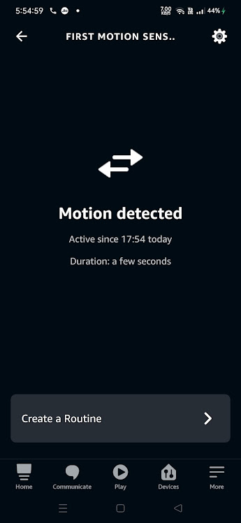
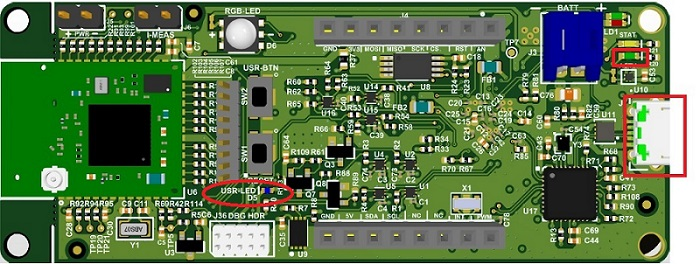
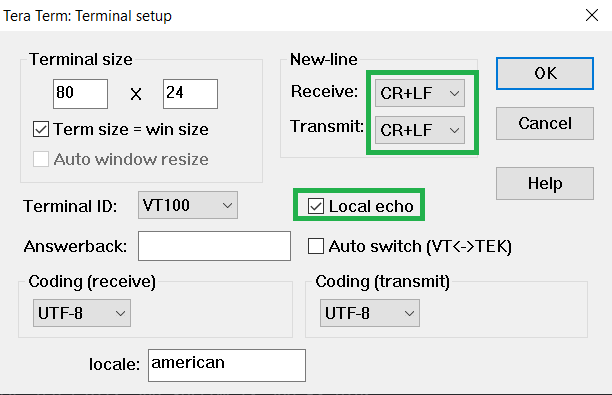
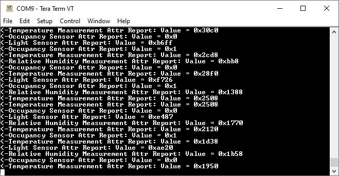

4.7.4 Zigbee Application Demo: Multi-Sensor with Low Power Functionality
WBZ451 Curiosity Board
Devices (Device): | PIC32CX1012BZ25048(MCU) on WBZ451 Module |
Peripherals (Used, On-Board): | UART-USB Converter|
Introduction
This tutorial will help users to create a low power enabled multi-sensor application.
Prerequisites :
Hardware Requirement
| Tool | Quantity |
|---|---|
| WBZ451 Curiosity Boards | 2 |
| Micro USB cable | 2 |
| Personal Computer | 1 |
SDK Setup
Getting Started with Software Development
Terminal Software
Programming the Precompiled hex file or Application Example
The demo needs two devices. One is the Combined Interface, and the other is multisensor.
- One of the WBZ451 boards is programmed with Combined Interface which can act as Zigbee Gateway/Coordinator. Program the CI pre-compiled hex image by following the steps mentioned in the “Programming the precompiled hex file or Application Example” section of the Zigbee Centralized Network Formation by Combined Interface document on one curiosity board.
- Another WBZ451 Curiosity board is programmed with multisensor application which can act as Zigbee end device. Follow the below step for programming multisensor application on another curiosity board.
Programming the hex file using MPLABX IPE
- Precompiled Hex file is located in
<Harmony Content Path>\wireless_apps_pic32cxbz2_wbz45\apps\zigbee\multisensor\hexfolder. - For more details on the steps, go to Programming A Device .
Programming the Application using MPLABX IDE
- Follow steps mentioned in of Running a Precompiled Example document.
- Open and program the Application
Example
multisensor.xlocated in<Harmony Content Path>\wireless_apps_pic32cxbz2_wbz45\apps\zigbee\multisensor\firmwareusing MPLABX IDE.
For more details on how to find the Harmony Content Path, refer to Installing the MCC Plugin.
Demo Description
This application demonstrates the Zigbee Multi-Sensor end device joining to Zigbee Coordinator (Combined Interface or third-party gateway's such as Amazon Echo plus can also be used instead of CI.) After joining, multisensor device will start ZCL attribute reporting of sensor data such as temperature, occupancy, light, and humidity after connecting to the network.
| Application | Zigbee Logical Device Type | Functionality |
|---|---|---|
| Combined Interface | Coordinator | Device capable of controlling and monitoring other devices. It is typically a mains-powered device like a personal computer |
| Multi-Sensor | End Device | Reports sensor data such as temperature, occupancy, light, and humidity periodically to gateway |
Testing/Demo Steps: Commissioning
The Zigbee Multi-Sensor can be connected to any Zigbee network.
The steps explained in Joining Multi-Sensor with Amazon Echo can be followed to connect Zigbee Multi-Sensor to Amazon Echo, if Amazon Echo has Built-in Zigbee smart home hub.
The steps explained in Joining Multi-Sensor with WBZ451 Combined Interface (CI) Coordinator can be followed to connect with WBZ451 based combined interface which acts as Zigbee Coordinator.
Joining Multi-Sensor with Amazon Echo
-
Multi-Sensor can be added to Alexa's Zigbee network by voice commands or by using Alexa mobile app.
-
Voice Commands: Open Alexa to discover the Multi-Sensor device. Say “Discover my devices”. or
-
Alexa App:
-
Launch Alexa app, from the menu, select the Add Device.
-
Select the type of smart home device “Motion Sensor” and select other.
-
Initiate Discover Devices.
-
Power on the Multi-Sensor device. The Multi-Sensor will be discovered and shown as motion sensor in Alexa app as shown below.Note: Echo Plus is in discovery mode for 45 secs. Devices wanting to join Echo Plus should initiate joining/connecting procedure within this time limit for a successful join.
-
Joining Multi-Sensor with WBZ451Combined Interface (CI) Coordinator
# Hardware & Software Setup
Supply power to WBZ451 Curiosity Board consisting of Combined Interface application by connecting a USB cable. Power Supply (PS) Green LED will turn on when connected to PC.
The application activity is shown as "Console Log" through on board UART-USB converter
-
Open Terminal(eg: Tera Term) with the setup as shown below to look for these logs
On the PC side virtual COM port connection that corresponds to the board shall have following settings:
-
BAUD RATE: 115200 (as configured in SERCOM configuration)
-
PARITY: None
-
DATA BITS: 8
-
STOP BITS: 1
-
FLOW CONTROL: None
In addition, local echo and sending line ends with line feeds shall be enabled in the PC serial terminal application.
-
# Network Formation (Coordinator - (Combined Interface))
Follow the steps explained in Network Formation (Coordinator - (Combined Interface)) to open up the network in CI.
# Commissioning (End Device - Multi-Sensor)
Supply power to WBZ451 Curiosity Board which is programmed with Multi-Sensor image by connecting a USB cable. The Multi-Sensor will search for Zigbee coordinator device and will join to network and initiate Finding & Binding.

Once Multi-Sensor finishes Finding & Binding procedure, it will start attribute reporting. The Combined interface terminal log will print the received attribute information as shown below.

Creating Application Device Types From Scratch Using MCC
This section intended to showcase the complete application development from scratch including the individual component and its dependency inclusion.
For developing combined interface from scratch, refer to the “Creating Application Device Types From Scratch Using MCC” section of Zigbee Centralized Network Formation by Combined Interface.
For developing the multisensor low power application, follow the below steps.
- Create a new MCC Harmony Project. For more details, refer to 2.5 Creating a New MCC Harmony Project.
- Option 1:
Import component configuration: This step helps users setup the basic
components and configuration required to develop this application. The imported
file is of format .mc3 and is located in the path
<Harmony Content Path>\wireless_apps_pic32cxbz2_wbz45\apps\zigbee\multisensor\firmware\multisensor.X.For more details on how to import the component configuration , refer to14.3 Importing Existing App Example Configuration.
Verify the project graph and configuration options shown in the below steps.
Note: Import and export functionality of the Harmony component configuration will help users to start from a known working setup of the MCC configuration. - Option 2: Follow the remaining steps.
- Add “Multi Sensor” device type to the project and accept all the dependencies.

Accept all the component auto-activation and attachment auto-connect confirmation.

Confirm “Yes” for all the Attachment Auto-Connect requests.

- Add TCC2 to the project graph.

- After the inclusion of the dependent components, the final project graph looks
like.

- Configure “Multi Sensor”
component.
Enable Deep Sleep feature.
Set Tx power to 0.
- Configure “Device_Support”
component.

- System Clock Configuration and
SOSC selection during sleep mode.

- System Clock Selection

- SOSC Clock Configuration

- System Clock Selection
- Pin configuration:

Configure the pins as shown: